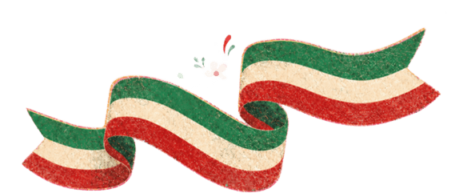

El mes de los sismos: La creencia de que tiembla más en este mes es un mito científico. La Universidad Nacional Autónoma de México explica que los sismos no se pueden predecir ni dependen del calendario.
El Grito fue el 15 de septiembre: El llamado histórico de Miguel Hidalgo ocurrió en la madrugada del 16 de septiembre de 1810. Se celebra el 15 por costumbre
El cumpleaños de Porfirio Díaz: El presidente Porfirio Díaz cambió la conmemoración oficial del Grito a la noche del 15 de septiembre para que coincidiera con su propio cumpleaños.
El Himno Nacional: El Gobierno de México recuerda que el Himno Nacional Mexicano se cantó por primera vez el 15 de septiembre de 1854.
